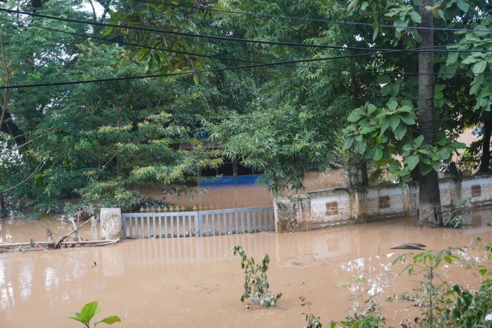

Why history matters
Flooding is a recurring risk
Taungoo and nearby communities have experienced flooding during periods of heavy rain and rising water in the Sittaung River. Low-lying areas and villages near the river can be especially vulnerable when water levels rise quickly.
Reports from 2024 and 2025 document serious impacts. These events are evidence that flood preparedness, timely warnings, and effective water management matter—not proof that every flood has the same cause or severity.

Important Flood Events
Three important flood events in Taungoo.
Flooding Across Taungoo
Heavy rainfall and rising Sittaung River levels caused flooding in Taungoo and nearby villages. About 5,000 people were affected.
Read More →Severe September Floods
Heavy rainfall associated with Typhoon Yagi contributed to widespread flooding. The river rose 72 cm within six hours on 13 September.
Read More →River Exceeded Danger Level
On 28 July 2025, the Sittaung River reached 634 cm, exceeding its reported danger level of 600 cm by 34 cm.
Read More →Wards and village tracts
The study describes Taungoo Township as including 23 urban wards and 38 village tracts.
Regularly flooded areas
The study identifies these wards as areas that are regularly flooded.
Key-person interviews
Researchers interviewed 14 people, including civil society groups, monks, flood victims, business owners, and government staff.
What the 2024 River-Level Graphs Show
The study Urban Flood and Community Response in Taungoo, Myanmar by Aung Kyaw and Thin Thin Khaing (presented 20 December 2025) includes river-level records from the Department of Meteorology and Hydrology (DMH), Taungoo.

Sittaung River flood pattern, August–November 2024
The study's graph marks a critical water-level line and reports that the river rose above 600 cm five times during the four-month period.

Rapid rise in September 2024
For 11–27 September 2024, the study reports 17 days above its critical water level. It also highlights a 72 cm rise within six hours on 13 September, illustrating how quickly conditions can change.

Flood distribution in Taungoo, 14 September 2024
The study's flood map, based on terrain data and field survey, indicates flooding across much of the urban area. The authors note that the mapped distribution includes some errors, so it should be read as a study map rather than a perfect boundary of every flooded location.
Source: Aung Kyaw & Thin Thin Khaing, Annual Alumni Meeting on "Strengthening Resilience to Earthquakes and Climate Hazards: A Pathway to Sustainable Future”
What the reports show
The impact on communities
People affected
An estimate for the August 2024 flooding in Taungoo and nearby villages, reported by Eleven Media Group.
Villages flooded
A September 2024 report described more than 30 villages in Taungoo Township as affected by flooding.
River level reported
The Sittaung River level at Taungoo on 28 July 2025, reported as 34 cm above the 600 cm danger level.
Note: These are event-specific reported figures, not current conditions or a complete record of every flood in Taungoo.
Patterns behind the risk
The reports connect Taungoo flooding with heavy and continuous rainfall and rising river levels. Local terrain, drainage capacity, and the location of homes can also affect how communities experience floodwater.
What we can learn
Past events underline the importance of listening to official warnings, preparing evacuation plans, protecting clean drinking water, and improving flood-risk awareness. Our proposed underground discharge tunnel is a school project concept and would need professional study before any real construction.
Explore our solution